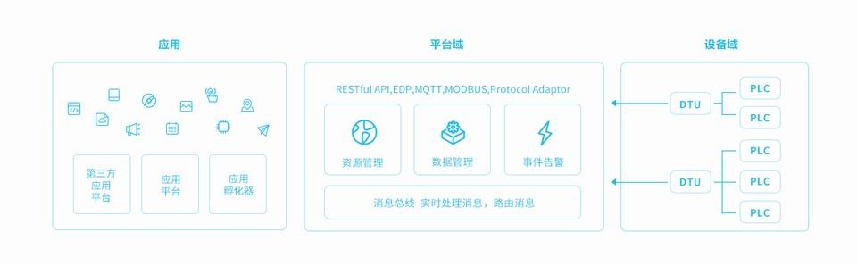
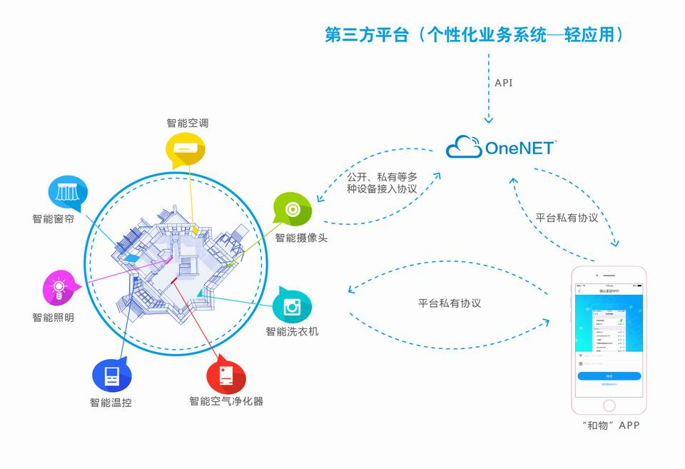

平台概述●平台概述
平台概述
简介
畅享物联平台是中国移动物联网有限公司响应“大众创新、万众创业”以及基于开放共赢的理念，面向公共 服务自主研发的开放云平台，为各种跨平台物联网应用、行业解决方案提供简便的海量连接、云端存储、消息分发 和大数据分析等 优质服务，从而降低物联网企业和个人（创客）的研发、运营和运维成本，使物联网企业和个人（创客）更加专注 于应用，共建以电力通信的“全科医生”为中心的物联网生态环境。
电力通信的“全科医生”提供设备全生命周期管理相关工具，帮助个人、企业快速实现大规模设备的云端管理；开放第三方API接 口，推进个性化应用系统构建；提供定制化“和物”APP，加速个性化智能应用生成。
平台架构示意图
畅享物联平台在物联网中的基本架构如下图所示，作为PaaS层，畅享物联平台为SaaS层和IaaS层搭建连接桥梁，分别向上下游提 供中间层核心能力。
应用场景示意图
畅享物联平台聚焦各大行业痛点需求，在智能家居、智慧车载、智慧穿戴、智慧能源以及工业制造等行业提供完整的解决 方案。
价值与优势
一站式托管—高效性、低成本
多协议智慧解析—包容性、适应性
数据存储和大数据分析—可靠性、安全性
多维度支撑—即时性、持续性